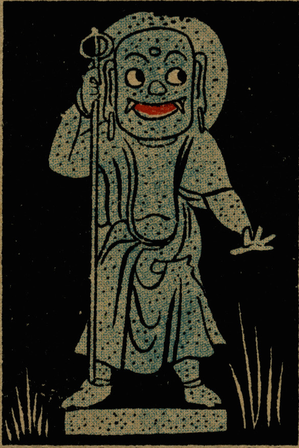

← 图鉴索引

地蔵の化物。目を見開き、口からは鋭い牙が生えている。
出典：親書誌：U426_nichibunken_0280：[化物・猿飛佐助]；バケモノ サルトビ サスケ／日付：2014／資源識別子：U426_nichibunken_0280_0003_0000
Copyright (c)2010- International Research Center for Japanese Studies, Kyoto, Japan. All rights reserved.